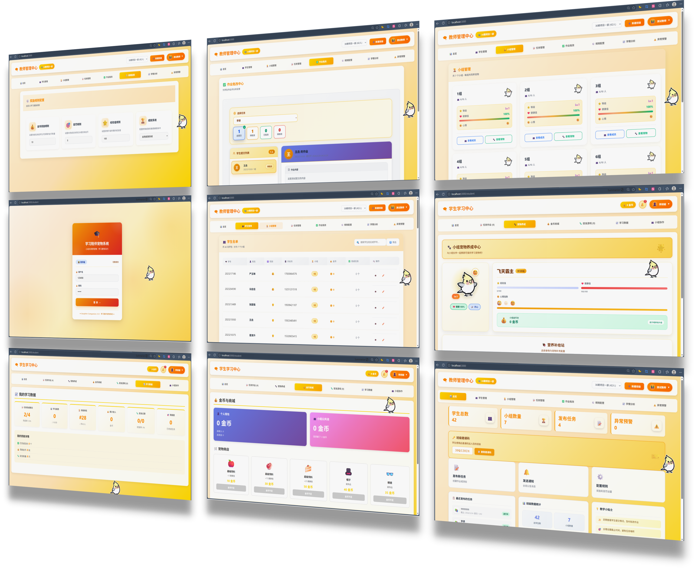

项目背景

在快节奏的学习生活中，用户需要一个温暖的虚拟伙伴来缓解压力，提供情感支持。
通过可爱的桌宠形象提醒学习计划，让时间管理变得有趣，提升学习效率。
捉虫游戏等互动玩法增加使用趣味性，让学习之余能够轻松娱乐。
项目涵盖AI对话、学习提醒、捉虫游戏、任务管理四大核心模块，功能丰富，交互友好。
基于Qwen-Agent大模型实现自然语言对话，支持日常闲聊、学习答疑、情感交流等多种场景。
支持定时提醒、全时段学习提醒测试，通过可爱的动画和音效提醒用户完成学习任务。
趣味互动小游戏，点击捕捉屏幕上随机出现的虫子，增加使用趣味性和成就感。
支持任务创建、删除、状态管理，教师端发布的任务可同步至学生端，实现双向同步。
PyQt5桌面应用，负责桌宠展示、交互、游戏逻辑
FastAPI后端服务，处理AI对话、任务同步、数据存储
Taro小程序，教师端发布任务，学生端接收通知
查看学习吧小鸟项目的完整PPT介绍，了解项目背景、设计思路和技术实现